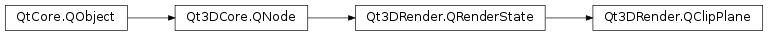

Qt3DRender.QClipPlane¶
Synopsis¶
Functions¶
- def
distance() - def
normal() - def
planeIndex()
Slots¶
- def
setDistance(arg__1) - def
setNormal(arg__1) - def
setPlaneIndex(arg__1)
Signals¶
- def
distanceChanged(distance) - def
normalChanged(normal) - def
planeIndexChanged(planeIndex)
Detailed Description¶
Enables an additional OpenGL clipping plane that can be in shaders using gl_ClipDistance
By default, OpenGL supports up to 8 additional clipping planes. Qt3DCore::QClipPlane allows to enable one of these additional planes. These planes can then be manipulated in the shaders using gl_ClipDistance[i] where i varies between 0 and 7. The underlying implementation may support more than 8 clip planes, but it is not guaranteed.
-
class
PySide2.Qt3DRender.Qt3DRender.QClipPlane([parent=nullptr])¶ Parameters: parent – PySide2.Qt3DCore.Qt3DCore::QNode
-
PySide2.Qt3DRender.Qt3DRender.QClipPlane.distance()¶ Return type: PySide2.QtCore.floatSee also
PySide2.Qt3DRender.Qt3DRender::QClipPlane.setDistance()
-
PySide2.Qt3DRender.Qt3DRender.QClipPlane.distanceChanged(distance)¶ Parameters: distance – PySide2.QtCore.float
-
PySide2.Qt3DRender.Qt3DRender.QClipPlane.normal()¶ Return type: PySide2.QtGui.QVector3DSee also
PySide2.Qt3DRender.Qt3DRender::QClipPlane.setNormal()
-
PySide2.Qt3DRender.Qt3DRender.QClipPlane.normalChanged(normal)¶ Parameters: normal – PySide2.QtGui.QVector3D
-
PySide2.Qt3DRender.Qt3DRender.QClipPlane.planeIndex()¶ Return type: PySide2.QtCore.intSee also
PySide2.Qt3DRender.Qt3DRender::QClipPlane.setPlaneIndex()
-
PySide2.Qt3DRender.Qt3DRender.QClipPlane.planeIndexChanged(planeIndex)¶ Parameters: planeIndex – PySide2.QtCore.int
-
PySide2.Qt3DRender.Qt3DRender.QClipPlane.setDistance(arg__1)¶ Parameters: arg__1 – PySide2.QtCore.floatSee also
PySide2.Qt3DRender.Qt3DRender::QClipPlane.distance()
-
PySide2.Qt3DRender.Qt3DRender.QClipPlane.setNormal(arg__1)¶ Parameters: arg__1 – PySide2.QtGui.QVector3DSee also
PySide2.Qt3DRender.Qt3DRender::QClipPlane.normal()
-
PySide2.Qt3DRender.Qt3DRender.QClipPlane.setPlaneIndex(arg__1)¶ Parameters: arg__1 – PySide2.QtCore.intSee also
PySide2.Qt3DRender.Qt3DRender::QClipPlane.planeIndex()
© 2018 The Qt Company Ltd. Documentation contributions included herein are the copyrights of their respective owners. The documentation provided herein is licensed under the terms of the GNU Free Documentation License version 1.3 as published by the Free Software Foundation. Qt and respective logos are trademarks of The Qt Company Ltd. in Finland and/or other countries worldwide. All other trademarks are property of their respective owners.